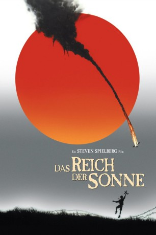

#1555 Das Reich der Sonne
Alternativ: Empire of the Sun
Auszeichnungen: für 6 Oscars nominiert 3 BAFTA-Awards gewonnen
 
 IMDB-Wertung: 7.8 / 10
IMDB-Wertung: 7.8 / 10  Metascore: 62
Metascore: 62 
Eine Zeit voller Aufruhr, eine Welt im Krieg, ein Junge allein. Shanghai, 1941. Der 11-jährige Jim Graham (Christian Bale) führt mit seinen Eltern ein bequemes, abgeschirmtes Leben im britischen Viertel. Doch die Idylle ist trügerisch. Als die Japaner angreifen, wird Jim in der ausbrechenden Panik von seinen Eltern getrennt und muss nun versuchen, allein zu überleben. Auf seiner Odyssee trifft er auf die Amerikaner Basie (John Malkovich) und Frank (Joe Pantoliano), die ihn vor dem Verhungern retten. Doch bald geraten sie in die brutale Gewalt der Japaner und werden in ein Lager gesperrt. Hier lernt Jim, was Krieg ist und wie man ihn überlebt...
Jahr: 1987
Dauer: 153 Minuten
FSK: 12
Land: USA Studio: Warner Bros.Tonspuren: DD2.0 - ,
Untertitel:
Auflösung: 1080p (1920x1080) Größe: 11161 MB
Genre: Drama, Krieg, Geschichte
Regisseur:  Steven Spielberg
Steven Spielberg
Drehbuch: Tom Stoppard, J.G. Ballard, Menno Meyjes
Soundtrack: John Williams
Darsteller:
 Christian Bale als Jim
Christian Bale als Jim John Malkovich als Basie
John Malkovich als Basie Miranda Richardson als Mrs. Victor
Miranda Richardson als Mrs. Victor Nigel Havers als Dr. Rawlins
Nigel Havers als Dr. Rawlins Joe Pantoliano als Frank Demarest
Joe Pantoliano als Frank Demarest Leslie Phillips als Maxton
Leslie Phillips als Maxton Ben Stiller als Dainty
Ben Stiller als Dainty Ralph Seymour als Cohen
Ralph Seymour als Cohen Robert Stephens als Mr. Lockwood
Robert Stephens als Mr. Lockwood James Greene als British Prisoner
James Greene als British Prisoner Peter Copley als British Prisoner
Peter Copley als British Prisoner- Francesca Longrigg als British Prisoner
 Burt Kwouk als Mr. Chen
Burt Kwouk als Mr. Chen Paul McGann als Lt. Price
Paul McGann als Lt. Price Rochelle Rose als British Prisoner , uncredited
Rochelle Rose als British Prisoner , uncredited Masatô Ibu als Sgt. Nagata
Masatô Ibu als Sgt. Nagata- Emily Richard als Mary Graham, Jim's mother
- Rupert Frazer als John Graham, Jim's father
- Peter Gale als Mr. Victor
- Takatarô Kataoka als Kamikaze Boy Pilot
- David Neidorf als Tiptree
- Zhai Nai She als Yang
- Guts Ishimatsu als Sgt. Uchida
- Emma Piper als Amy Matthews
- James Walker als Mr. Radik
- Jack Dearlove als Singing Prisoner
- Anna Turner als Mrs. Gilmour
- Ann Castle als Mrs. Phillips
- Yvonne Gilan als Mrs. Lockwood
- Ralph Michael als Mr. Partridge
- Sybil Maas als Mrs. Hug
- Eric Flynn als British Prisoner
- Simon Harrison als British Prisoner
- Barrie Houghton als British Prisoner
- Paula Hamilton als British Prisoner
- Thea Ranft als British Prisoner
- Tony Boncza als British Prisoner
- Nigel Leach als British Prisoner
- Sheridan Forbes als British Prisoner
- Barbara Bolton als British Prisoner
- Samantha Warden als British Prisoner
 Kieron Jecchinis als American Prisoner
Kieron Jecchinis als American Prisoner- Michael Crossman als American Prisoner
- Gary Parker als American Prisoner
- Ray Charleson als American Prisoner
- Tom Danaher als Col. Marshall
- Kong-Guo-Jun als Chinese Youth
- Takao Yamada als Japanese Truck Driver
- Hiro Arai als Japanese Sergeant - Airfield
- Marc de Jonge als Frenchman
Datei: X:\1987\Reich der Sonne, Das (1987, FSK12, 1920x1080).mkv seit 16.07.2015
Festplatte: HD 1987-1991
 Es gibt insgesamt 50 Filme in der Gruppe '1987'
Es gibt insgesamt 50 Filme in der Gruppe '1987'